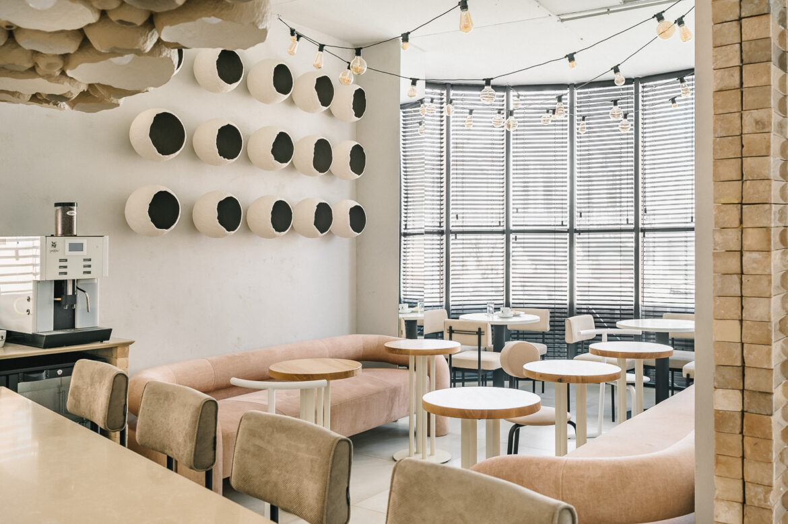

Ribas rooms Lutsk — готель української мережі Ribas Hotels Group, розташований у Луцьку в центрі міста за адресою вул. Гаврилюка, 3а. Поряд з готелем ви знайдете як кав‘ярні, ресторани, магазини, так і музеї та цікаві споруди міста. А ввечері буде приємно прогулятися парком ім. Лесі Українки з думками про минулий день.
А ПОПРАЦЮВАТИ?Ми знаємо, як часом тяжко знайти тихе місце, де можна було б сконцентруватися та зануритися у важливі робочі справи. Тому, ми обладнали коворкінг-зону з Wi-Fi прямо в Ribas rooms Lutsk. Чудовий вид та приємна атмосфера надихатиме вас на нові креативні ідеї і нестандартне бачення. А це одна з основ успіху, як говорить засновник мережі Артур Лупашко. Саме такий підхід дозволяє нам створювати готелі нового рівня, які так цінують наші гості. Запрошуємо і вас стати гостем мережі Ribas Hotels Group в Луцьку. Чекаємо на вас.
ПАРКОВКА ТА ТРАНСФЕРДістатися до нас можна як на власному авто, так і замовити трансфер при бронюванні (за додаткову оплату). На території є зручна парковка, щоб ви не витрачали час на пошуки вільного паркомісця в центрі Луцька — все поруч.
РОЗВАГИВ готелі Луцька можна не лише відпочити, а й розважитись. На нульовому поверсі будьте готові до несподіванки, адже на вас чекатимуть ігрові автомати та казино. Спробуйте відчути себе агентом 007 з серії «Казино „Рояль“». Та не втрачайте голову, хіба що ненадовго.
